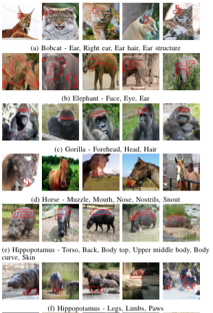
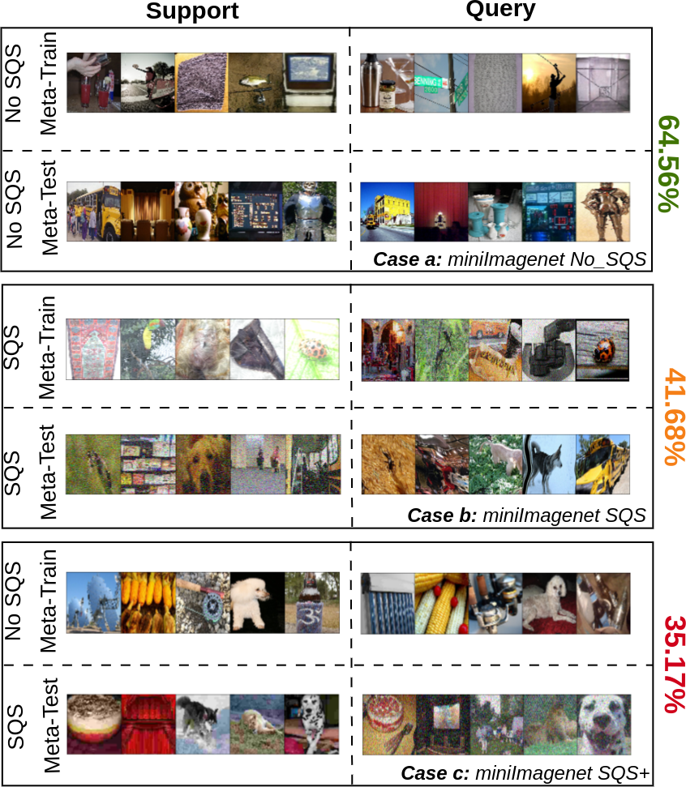
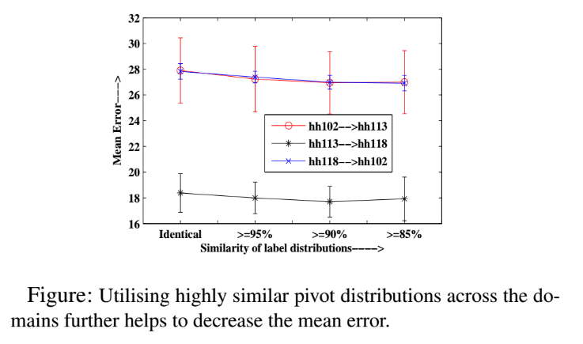

|
Laboratory of Statistical Artificial Intelligence and Machine Learning
Research Areas
Theory:
Applications:
Computer vision
Document Analysis
ICT for Development
Projects
Explainable and Interpretable AI
|
 |
Abstract
The inner workings of deep convolutional neural networks (CNNs) remain largely a mystery to humans, despite their ability to achieve state-of-the-art performance in image classification tasks. This lack of interpretability has sparked interest in developing methods to explain the workings of these deep models in order to improve their trustworthiness. Our team has proposed models that can explain the predictions made by a pre-trained CNN in terms of automatically discovered concepts, as well as the first explainable by design supervised domain adapted classifier. These developments represent important steps towards increasing the interpretability of deep learning models and improving their trustworthiness.
Publications
 V Kamakshi and N C Krishnan, Analyzing XSDA-Net: An Explainable Supervised Domain Adaptated Classifier, Under review, 2022. V Kamakshi and N C Krishnan, Analyzing XSDA-Net: An Explainable Supervised Domain Adaptated Classifier, Under review, 2022.
V Kamakshi and N C Krishnan, Explainable Supervised Domain Adaptation, IEEE International Joint Conference on Neural Networks, 2022
S Z S Sunder, V Kamakshi, N Lodhi, and N C Krishnan, Evaluation of Salience-based Explainability Methods, ICML Workshop on Theoretic Foundation, Criticism, and Application Trend of Explainable AI, 2021.
R Sharma, N. Reddy, V Kamakshi, N C Krishnan, and S Jain, MAIRE- A Model Agnostic Interpretable Rule Extraction Procedure for Explaining Classifiers, Cross Domain Machine Learning and Knowledge Extraction (CD-MAKE), 2021.
V Kamakshi, U Gupta, and N C Krishnan, PACE: Posthoc Architecture-Agnostic Concept Extractor for Explaining CNNs, IEEE International Joint Conference on Neural Networks (IJCNN), 2021.
A Kumar, K Sehgal, P Garg, V Kamakshi, and N C Krishnan, MACE – A Model Agnostic Concept Extractor for Explaining Image Classification Networks, accepted, IEEE Transactions on Artificial Intelligence, 2021.
|
Meta-learning for Few-shot Learning
|
 |
Abstract
Meta-learning has emerged as a promising direction in machine learning, particularly for learning under constrained resource settings such as few-shot learning. Popular approaches to meta-learning either involve learning a generalizable initial model or a generic parametric optimizer through batch episodic training. Our research on meta-learning focuses on analyzing the effect of task importance on learning dynamics, handling shifts in the support and query sets, and understanding the limitations of meta-learners such as MAML, MetaSGD, Protonets, and Meta-LSTM++.
Publications
A Aimen, S Sidheekh, B Ladrecha, and N C Krishnan, Not All Tasks are Equal - Task Attended Meta-learning for Few-shot Learning, Under review, 2022.
A Aimen, S Sidheekh, H Ahuja, and N C Krishnan, Meta-learning Initialization vs Optimizer: Beyond 20 ways Few-shot Learning, under review, 2022
A Aimen, B Ladrecha, and N C Krishnan, Adversarial Projections to Tackle Support-Query Shifts in Few-Shot Meta-Learning, European Conference on Machine Learning and Principles and Practice of Knowledge Discovery in Databases (ECMLPKDD), 2022.
A Aimen, S Sidheekh, B Ladrecha, and N C Krishnan, Task Attended Meta-Learning for Few-shot Learning, NeuRIPS Workshop on Meta-Leanring, 2021.
A Aimen, B Ladrecha, and N C Krishnan, Adversarial Projections to Tackle Support-Query Shifts in Few-Shot Meta-Learning, AutoML Conference, Late Breaking Results Workshop, 2022.
A Aimen, H Ahuja, S Sidheekh and N C Krishnan, Deciphering Meta Initialized and Optimized Neural Networks, RBCDSAI and FCA Conference on Deployable AI, 2022.
A Aimen, S Sidheekh, V Madan, and N C Krishnan, Stress Testing of Meta-Learning Approaches for Few-Shot Learning, AAAI Meta-Learning and Challenge Workshop, 2021.
|
Zero-shot Learning
 |
Abstract
Zero shot learning (ZSL) is a machine learning approach that aims to recognize unseen classes by exploiting the semantic relationships between seen and unseen classes. However, ZSL algorithms often face two major problems: the hubness problem and bias towards the seen classes. Existing ZSL methods typically only address one of these problems in either the conventional or generalized ZSL setting. Our initial work attempted to overcome both of these challenges, and we are now working on developing zero-shot learning approaches for recognizing words in hand-written historical documents. By addressing these challenges, our goal is to improve the effectiveness of ZSL algorithms in a variety of real-world applications.
Publications
R Bhatt, A Rai, N C Krishnan, and S Chanda, Pho(SC)-CTCt: A Hybrid Approach Towards Zero-shot Word Image Recognition, International Journal on Document Analysis and Research, 2022.
A Rai, N C Krishnan, and S Chanda, Pho(SC)Net: An Approach Towards Zero-shot Word Image Recognition in Historical Documents, International Conference on Document Analysis and Research (ICDAR), 2021.
A Paul, P Munjal, and N C Krishnan, Semantically Aligned Bias Reducing Zero-shot Learning, IEEE Conference on Computer Vision and Pattern Recognition (CVPR), 7056-7065, 2019.
|
Generative Modeling
 |
Abstract
Despite the impressive capabilities of Generative Adversarial Networks (GANs) in modeling data distributions, training them remains a challenging task. One factor that contributes to this difficulty is the non-intuitive nature of the GAN loss curves, which make it difficult to evaluate the progress of training. We investigate the challenges with existing methods of evaluation and propose a theoretically grounded measure to identify GAN convergence. Our proposed measure provides a more objective way to evaluate GAN training progress, allowing for better control and more efficient training of GANs.
Publications
S Sidheekh, A Aimen, and N C Krishnan, On Characterizing GAN Convergence Through Proximal Duality Gap, International Conference on Machine Learning (ICML), 2021.
S Sidheekh, A Aimen, V Madan, and N C Krishnan, Perturbed Duality Gap as a Measure for Monitoring GAN Training, 2021.
S Sidheekh, A Aimen, V Madan, and N C Krishnan, On Duality Gap as a Measure for Monitoring GAN Training, IEEE International Joint Conference on Neural Networks (IJCNN), 2021.
P Munjal, A Paul, and N C Krishnan, Implicit Discriminator in Variational Autoencoder, IEEE International Joint Conference on Neural Networks (IJCNN), 2020.
|
Transfer Learning and Domain Adaptation
|
 |
Abstract
The two main challenges in performing feature transfer are the heterogeneity of features and the lack of correspondence between data points in different domains. Our research into transfer learning and domain adaptation aims to address these challenges and bridge the gap between diverse source and target domains. By studying these techniques, we aim to improve the transferability of features and better align the data points in different domains, ultimately improving the performance of machine learning models.
Publications
S Sukhija, and N C Krishnan, Shallow Domain Adaptation - A survey, Springer book on Domain Adaptation in Computer Vision with Deep Learning, Eds: H Venkateswara, and S Panchanathan, 2020.
S Sukhija, S Varadarajan, N C Krishnan, and S Rai, Multi-Partition Feature Alignment Network for Unsupervised Domain Adaptation, IEEE International Joint Conference on Neural Networks (IJCNN), 2020.
S Sukhija, and N C Krishnan, Supervised Heterogeneous Feature Transfer via Random Forests, Artificial Intelligence, 268, 30-53, 2019.
J Garg, S V Peri, H Tolani, and N C Krishnan, Deep Cross modal learning for Caricature Verification and Identification (CaVINet), ACM Conference on Multimedia (ACM MM), 1101-1109, 2018.
S Sukhija, N C Krishnan, and D Kumar, Supervised Heterogeneous Transfer Learning using Random Forests, to ACM International Joint Conference on Data Science and Management of Data (CODS-COMAD), 2018.
S Sukhija and N C Krishnan, Web-Induced Heterogeneous Transfer Learning with Sample Selection, European Conference on Machine Learning and Principles and Practice of Knowledge Discovery in Databases (ECMLPKDD), 777-793, 2018.
S Sukhija, N C Krishnan, and G Singh, Supervised Heterogeneous Domain Adaptation via Random Forests, International Joint Conference on Artificial Intelligence (IJCAI), 2039-2045, 2016.
|
|